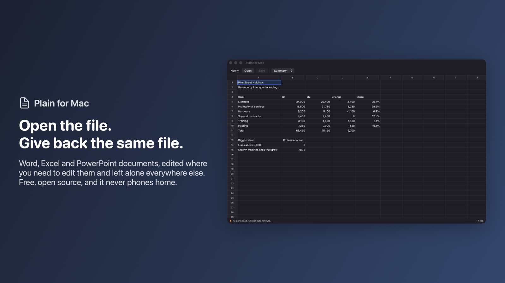
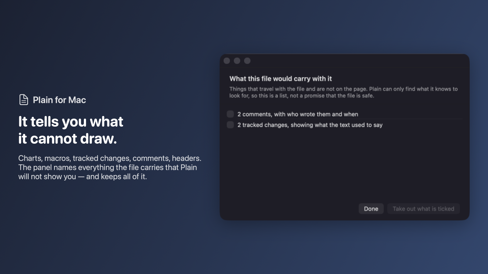

Word, Excel and PowerPoint files.
Edited without being rewritten.
Every editor that opens a .docx reads it into its own idea of a document and writes that idea back out. Whatever it has no room for is quietly gone: the chart, the macro, the tracked changes, the header nobody looked at. Plain opens the file as the package of parts it really is, edits the parts you came to edit, and writes back every other part as the exact bytes it found.
Download for Mac Free. Open source. macOS 14 or later, Apple Silicon and Intel. No account, no cloud, no permissions to grant.

The promise a test can check
Open a file, save it without changing anything, and you get the same file back byte for byte. That is not a claim about intentions, it is something a machine can verify, and it runs on every build. Change one cell and only the parts holding that cell are rewritten. The line at the bottom of the window counts it every time you save: 13 parts read, 13 kept byte for byte. Check it on your own documents with plainmac roundtrip ~/Documents/*.docx.
The same engine as Plain for Windows
This app does not have its own idea of what a .docx is. The part that understands the file format is the same code that Plain for Windows runs, compiled ahead of time into a native library the app links. Nothing of .NET ships in the app and there is no runtime to install. The two programs agree by construction rather than by intention, and a bug found on one is fixed for both.
The fifth of the features that is most of the work
Spreadsheets
Cells, text and formulas across every sheet, at the widths the file asks for. Sort, take out rows that say the same thing, split a column. Insert and delete rows and columns and every formula in the workbook is rewritten so it still means what it meant. Colour, borders, number formats, frozen rows. When sorting would change what a formula means, it refuses and names the formula rather than guessing.Documents
Headings, paragraphs, lists and tables, laid out as what they are. Page headers and footers. Links you can follow, edit or create. Comments and tracked changes you can accept or turn down. Pictures you can put in and describe.Presentations
The text on every slide, in the order it is read out. Speaker notes, which travel with every copy and which nobody sees on the slide. Slides added, removed and reordered. Shapes it cannot draw stay exactly where they are.Everything else
Several documents open at once, one window each. Undo and redo, find and replace, a folder searched, two versions compared, PDF with page setup, CSV, document properties. And a command line twin for scripts:plainmac do reaches all forty-two operations.
What it keeps but does not show
Charts, pivot tables, macros, SmartArt, embedded objects, slide layouts, masters, themes, footnotes, headers and footers. All of it is in the saved file unchanged, and the panel down the side names it in plain words rather than by where it lives in the package. Before you send a file, one panel tells you what travels with it: who commented, what the text used to say, where the links really go, and which properties name a person.
Honest limits
Plain does not lay out a page the way Word does — matching Word's pagination needs Word's own fonts and line breaking, so Plain shows a document as one scrolling column and says so, and its PDF is the text as Plain shows it rather than a facsimile. It does not draw shapes, charts or pictures in place; they are kept and listed. It has no macro engine: a macro survives the round trip, but Plain will not run it. It has never been opened in Microsoft Office — everything is checked against the file format itself, against LibreOffice as an independent reader, and against the byte-for-byte round trip. It is not a replacement for Office. It is what to reach for when you need to change three words in a contract without a four gigabyte install.
No account, no telemetry, no analytics, and no permissions to grant. The only network request is a daily check with GitHub for a newer version, which sends no identifier and nothing about your files, and which you can turn off in Settings. MIT licensed, built by Keith Adler. More from the same maker: keithadler.github.io.